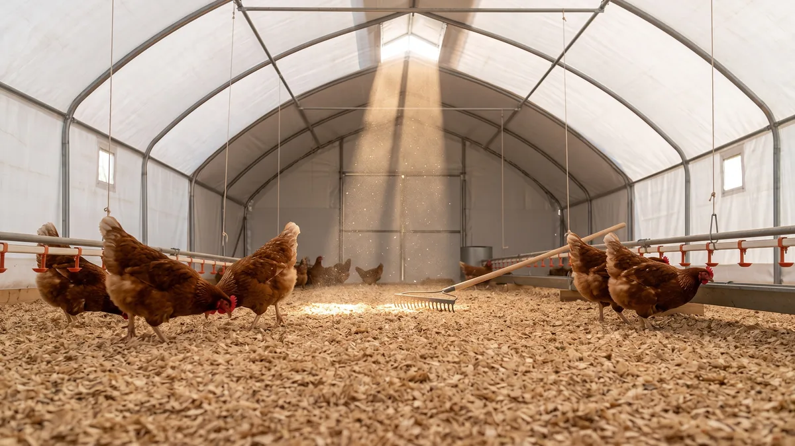

Kümes altlığı (litter) seçimi ve yönetimi
Tavuğun ayağının altındaki o birkaç santim malzeme, sürünün sağlığını da kokusunu da belirler. Doğru talaşı, kalınlığı, nem testini ve kışın ısıtan derin altlık yöntemini sahadan anlattım.

Tavuğa gözünle bakarsın da ayağının altına pek bakmazsın. Oysa o birkaç santimlik malzeme, yani altlık, sürünün en sessiz ama en belirleyici parçasıdır. Kuru ve gevşek bir altlık; tavuğun tabanını sağlam, kümesi kokusuz, yumurtayı temiz tutar. Cıvıklaşmış, topak topak bir altlık ise sana koksidiyoz getirir, ayak tabanını yakar, amonyağı fışkırtır. Kümesin yarısı burada, tavuğun bastığı yerde kazanılır ya da kaybedilir.
Çoğu yeni başlayan altlığı bir kez serer, aylarca unutur. Sonra da "tavuklar niye hastalanıyor, yumurta niye kirli, koku niye gitmiyor" diye dolanır durur. Halbuki altlık serilip bırakılan bir şey değil, sürüyle birlikte yaşayan, yöneteceğin bir zemindir. Gel, önce hangi malzemeyi seçeceğine, sonra onu nasıl kuru ve diri tutacağına bakalım.
Kümes taban malzemesi olarak ne serilir?
İyi bir kümes taban malzemesinin dört işi var: nemi emecek, çabuk kuruyacak, amonyağı bir süre tutacak ve tavuğun ayağını yaralamayacak kadar yumuşak olacak. Bunların hepsini birden en iyi veren malzeme, tartışmasız kaba talaş. Ama bir şartla: ince, un gibi toz talaş olmayacak.
Toz talaş iki türlü baş belasıdır. Birincisi, tavuk eşinirken o tozu ciğerine çeker; sürüde açıklaması olmayan hırıltı, hapşırık başlar. İkincisi, ince toz nemi emmez, hemen keçeleşip su tutan bir tabaka olur. Marangozdan ya da hızardan talaş alırken avucuna al, sık; parmaklarının arasından un gibi akıyorsa o talaş kümese girmez. Rendeden çıkmış, kıvırcık, iri talaş ararsın.
Talaş bulamıyorsan ya da pahalıysa alternatifler var ama her biri bir ödünle gelir:
- Saman ve sap: Bulması kolay, ucuz. Ama emiciliği talaşın yarısı kadar. Uzun sapları tavuk parçalayamaz, altta havasız kalıp küflenir, topaklaşır. Kullanacaksan kısa doğranmış olsun ve daha sık karıştır.
- Çeltik kavuzu (pirinç kabuğu): Çeltik bölgesindeysen altın değerinde. Hafif, iyi havalanır, ayağı yaralamaz, ucuz. Emiciliği talaştan biraz düşük ama karışıma katınca harika iş görür. Tozsuz olması da avantaj.
- Kıyılmış mısır koçanı, fındık kabuğu: Yörene göre bol ve bedava olabilir. İri parçalar iyi havalanır ama tek başına sert kalır; talaşla karıştırmak en iyisi.
Kağıt, gazete, ince kum gibi şeylere hiç girme. Gazete kayar, tavuk bacağını incitir, ıslanınca hamur olur. Benim yıllardır kurduğum düzen şu: taban çeltik kavuzu ya da kaba talaş, üstüne ince bir tabaka daha talaş. Zeminin kendisi de bu işin altyapısı; nemi topraktan çeken bir taban üstüne ne serersen ser tutmaz, o yüzden kümes zemini ne olmalı yazısındaki taban seçimini de gözden geçir.
Kümes talaş kalınlığı ne olmalı?
En çok yapılan hata altlığı cimri sermek. "Bir avuç serpeyim de olsun" diye ince serilen altlık nemi hiç tutmaz, iki günde çamura döner. Altlık kalın olacak ki içine nem alacak deposu, kuruması için havası olsun.
Mevsime göre kaba ölçü şudur:
| Dönem | Önerilen kalınlık | Neden |
|---|---|---|
| Yaz | 5-8 cm | Havalanma kolay, kalın tutup içi ısınmasın |
| Kış | 10-15 cm | Isı yalıtımı ve nem deposu; derin altlık için taban |
| Civciv/yarka | 7-10 cm | Ayak sağlığı ve ısı; ama tozsuz olacak |
Kışın altlığı kalın tutmanın gizli faydası, ısı yalıtımı. 12-15 cm kuru talaş, soğuk zeminle tavuğun ayağı arasına bir yorgan gerer. Aynı mantığı kışın kümes nasıl sıcak tutulur yazısında yalıtım tarafıyla birlikte anlattım; altlık ile duvar yalıtımı el ele çalışır.
Nem kontrolü: elinde sıkınca dağılmalı
Altlık yönetiminin bütün sırrı tek kelimede: nem. Kuru altlıkta amonyak üreten bakteri iş yapamaz, koksidiyoz oosti gelişemez, taban yara tutmaz. Islak altlıkta ise hepsi birden coşar. Peki altlık ne zaman "kuru" sayılır?
Alet mucizesi aramana gerek yok, elin yeter. Eğil, bir avuç altlık al ve yumruğunda sık. Sıktığında topak yapıp elinde duruyorsa altlık fazla nemli. Açtığında dağılıp ufalanıyorsa nem tamındasın. Bu basit test, bir higrometreden daha çok işine yarar. Hedef bağıl nem kabaca %25-35 civarıdır ama sen bunu avucunla ölçersin.
Altlık nereden ıslanır, bilmek gerek:
- Sızdıran suluklar: En sık suçlu. Suluk altları çamursa önce orayı çöz, altlığı sonra düşün. Askılı ya da nipel suluk, yalağa göre çok daha az döker.
- Kötü havalandırma: Tavuğun nefesi ve dışkısıyla çıkan nem atılamazsa altlığa çöker. Bu doğrudan amonyak demek; kümes havalandırması ve koku kontrolü yazısındaki fan-nem dengesini kurmadan altlığı kuru tutamazsın.
- Yağmur ve yoğuşma: Yandan giren yağmur, kışın tavandan damlayan yoğuşma suyu altlığı noktasal ıslatır.
- Aşırı kalabalık: Az yere çok tavuk = çok dışkı, çok nem. Kapasiteyi zorlarsan hiçbir altlık dayanmaz.
Topaklaşan, keçeleşen yer bekleme; o bölgeyi çapayla ya da tırmıkla al, dışarı at, yerine taze kuru talaş koy. Bütün altlığı değiştirmene gerek yok, sorun genelde suluk altı ve kapı önü gibi belli noktalardadır. Haftada bir altlığı baştan sona kabartmak, alttaki nemi yüzeye çıkarıp kuruttuğu için topaklaşmayı en baştan önler.
Derin altlık yöntemi: kışın ısıtan, kendini yöneten zemin
İşin ustalık kısmı burada. Derin altlık yöntemi, altlığı her seferinde atmak yerine, kuru tabanın üstüne düzenli taze malzeme ekleyerek kalın, canlı bir tabaka oluşturmaktır. Alttaki eski katman faydalı mikroorganizmalarla dolar; bu mikroplar dışkıyı ayrıştırır, patojenleri baskılar ve ayrışırken ısı çıkarır. Yani kışın altlığın kendisi hafif bir soba gibi çalışır, tabanı ılık tutar.
Doğru kurulan derin altlık ayları bulur, hatta bir kış boyu değiştirilmez. Mantığı şu:
- Kuru, tozsuz talaşla 8-10 cm serip başla.
- Topaklaşan yeri al, boşalan yere ve genel yüzeye düzenli taze talaş ekle. Kalınlık zamanla 15-25 cm'e çıkar.
- Haftada bir-iki kez altlığı kabart, havalandır. Tavuklar zaten eşinerek bu işin çoğunu yapar; sen yardımcı olursun.
- Nemi avuç testiyle kontrol et; ıslanırsa taze kuru malzeme ekle, asla üstüne su gibi durma.
Derin altlığın bir güzel yan geliri de var: kış sonunda elinde iyi ayrışmış, olgun bir gübre olur. Bu boşa atılacak bir şey değil; tavuk gübresini gelire çevirmek yazısında anlattığım gibi bahçeye, satışa değer. Ama derin altlık ancak kuru başlarsa çalışır; nemli bir tabana kurarsan mikrobiyal denge bozulur, amonyak ve koku patlar.
Kireç katkısı ve pH: amonyağı dizginlemenin ucuz yolu
Amonyak, altlık nemli ve pH'ı yüksekken (bazikken) fışkırır. İşte burada sönmüş kirecin iki farklı işi karışıyor, bunu ayırmak lazım.
Tozlaştırıcı olarak sönmüş kireç doğrudan altlığın üstüne serpilmez. Çünkü sönmüş kireç pH'ı yükseltir, yüksek pH ise amonyağı serbest bırakır; tam ters teper. Kirecin altlıktaki asıl yeri, altlığı boşalttıktan sonra çıplak zemine, dezenfeksiyon için serpilmesidir. Sürü çıkınca tabanı süpür, ince bir tabaka sönmüş kireç at, üstüne yeni altlığı ser. Bu, koksidiyoz ve bit-akar döngüsünü kırmaya yardım eder.
Nemi bağlamak istiyorsan sönmüş kireç yerine alçıtaşı (jips) ya da özel altlık asitlendirici daha doğru; bunlar pH'ı düşürüp amonyağı tutar. Sönmüş kireci ölçüsüz kullanan, üstelik altlığa karıştıran çok üretici gördüm; koku azalacağına arttı. Kaba doz olarak, boş zemine metrekareye yaklaşık 100-150 gram sönmüş kireç yeter.
Islak altlık neyi getirir? Taban yarası, koksidiyoz, amonyak
Altlığı neden bu kadar ciddiye aldığımı görmek istiyorsan ıslak altlığın faturasına bak. Cıvık, topak bir taban üç büyük derdi birden açar:
- Taban yarası (pododermatit): Sürekli ıslak ve amonyaklı zeminde tavuğun ayak tabanı yumuşar, çatlar, iltihaplanır. Topallayan, ayak altı şişmiş tavuk yumurtayı da düşürür.
- Koksidiyoz: Bu parazitin oostileri nemli altlıkta gelişir. Özellikle civciv ve yarkada ölümcül olabilir; kanlı ishal, tüylerin kabarması, ani ölüm. Genç sürüde altlık kuruluğu hayat memat meselesi, bunu civciv büyütme rehberi yazısında da özellikle vurguladım.
- Amonyak ve verim kaybı: Islak altlıkta bakteri azotu amonyağa çevirir; keskin koku, sulu göz, solunum tahrişi ve düşen yumurta. Islak altlık, aslında yumurta verimini düşüren kümes hataları listesinin en tepesindekilerden.
Bir de gözden kaçan bir bağlantı: nemli, sıcak altlık bit ve kırmızı akar için de ideal ortam. Altlığı kuru ve kabarık tutmak, tavuklarda bit ve kırmızı akar mücadelesinin de yarısıdır.
Bütün bu zincirin başında çoğu zaman barınağın kendisi var. Tabandan nem çeken, yandan yağmur alan, havası dönmeyen bir kümeste altlığı kuru tutmak için sürekli kürek sallarsın. Baştan yalıtımlı, nemi dışarıda tutan, planlı havalandırılan bir barınak bu yükü daha ilk günden yarıya indirir.

750 Tavukluk Tavuk Çadırı
Altlığı her hafta çamurdan kurtarmakla uğraşmak yerine nemi baştan dışarıda tutan bir kabukla başla: 750 tavukluk yalıtımlı Tavuk Çadırı, 3-4 kat yalıtımlı brandası ve planlı havalandırmasıyla tabana yoğuşma indirmez, altlığını kuru ve diri tutar; 81 ilde anahtar teslim kurulur.
Çadır kümesin altlık açısından pratik yanı, tabanı topraktan ya da betondan yalıtıp üstüne rahatça kalın altlık serebilmen ve gövdenin havayı döndürerek altlığı kurutmaya yardım etmesi. Fiyat ve modelleri güncel fiyat listesinden görebilirsin; kapasiteni doğru seç ki altlığa fazladan yük binmesin.
Son bir söz: altlığı gözünle değil, elinle ve burnunla denetle. Her sabah kümese girdiğinde bir avuç al, sık; dağılıyorsa gülümse, topak yapıyorsa hemen o bölgeyi al, taze at. Ayağının altını kuru tutan sürü, doktora en az giden sürüdür.
Sık sorulanlar
Kümes altlığı için en iyi malzeme hangisi?
Kümes altlığı ne kadar kalın serilmeli?
Altlığın nemli olup olmadığını nasıl anlarım?
Derin altlık yöntemi nedir, nasıl uygulanır?
Kümes altlığına kireç atılır mı?
Islak altlık hangi hastalıklara yol açar?
Projenizi birlikte planlayalım
Kapasitenizi ve bölgenizi yazın; ölçü ve teklifi birlikte çıkaralım.
Kapasitenizi yazın